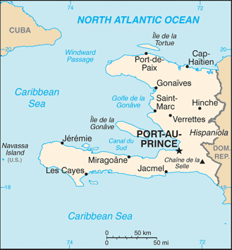
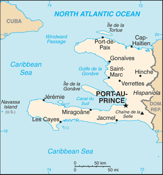

Central America and Caribbean :: HAITI
Introduction :: HAITI
-
The native Taino - who inhabited the island of Hispaniola when it was discovered by Christopher COLUMBUS in 1492 - were virtually annihilated by Spanish settlers within 25 years. In the early 17th century, the French established a presence on Hispaniola. In 1697, Spain ceded to the French the western third of the island, which later became Haiti. The French colony, based on forestry and sugar-related industries, became one of the wealthiest in the Caribbean but only through the heavy importation of African slaves and considerable environmental degradation. In the late 18th century, Haiti's nearly half million slaves revolted under Toussaint L'OUVERTURE. After a prolonged struggle, Haiti became the first post-colonial black-led nation in the world, declaring its independence in 1804. Currently the poorest country in the Western Hemisphere, Haiti has experienced political instability for most of its history. A massive magnitude 7.0 earthquake struck Haiti in January 2010 with an epicenter about 25 km (15 mi) west of the capital, Port-au-Prince. Estimates are that over 300,000 people were killed and some 1.5 million left homeless. The earthquake was assessed as the worst in this region over the last 200 years. President Michel MARTELLY resigned in February 2016 and was replaced by Interim President Jocelerme PRIVERT. President-elect Jovenel MOISE won the November 2016 elections and assumed office in February 2017.
Geography :: HAITI
-
Caribbean, western one-third of the island of Hispaniola, between the Caribbean Sea and the North Atlantic Ocean, west of the Dominican Republic19 00 N, 72 25 WCentral America and the Caribbeantotal: 27,750 sq kmland: 27,560 sq kmwater: 190 sq kmcountry comparison to the world: 148slightly smaller than Marylandtotal: 376 kmborder countries (1): Dominican Republic 376 km1,771 kmterritorial sea: 12 nmcontiguous zone: 24 nmexclusive economic zone: 200 nmcontinental shelf: to depth of exploitationtropical; semiarid where mountains in east cut off trade windsmostly rough and mountainousmean elevation: 470 melevation extremes: lowest point: Caribbean Sea 0 mhighest point: Chaine de la Selle 2,680 mbauxite, copper, calcium carbonate, gold, marble, hydropower, arable landagricultural land: 66.4%arable land 38.5%; permanent crops 10.2%; permanent pasture 17.7%forest: 3.6%other: 30% (2011 est.)970 sq km (2012)fairly even distribution; largest concentrations located near coastal areaslies in the middle of the hurricane belt and subject to severe storms from June to October; occasional flooding and earthquakes; periodic droughtsextensive deforestation (much of the remaining forested land is being cleared for agriculture and used as fuel); soil erosion; inadequate supplies of potable waterparty to: Biodiversity, Climate Change, Climate Change-Kyoto Protocol, Desertification, Law of the Sea, Marine Dumping, Marine Life Conservation, Ozone Layer Protectionsigned, but not ratified: Hazardous Wastesshares island of Hispaniola with Dominican Republic (western one-third is Haiti, eastern two-thirds is the Dominican Republic); it is the most mountainous nation in the Caribbean
People and Society :: HAITI
-
10,646,714note: estimates for this country explicitly take into account the effects of excess mortality due to AIDS; this can result in lower life expectancy, higher infant mortality, higher death rates, lower population growth rates, and changes in the distribution of population by age and sex than would otherwise be expected (July 2017 est.)country comparison to the world: 88noun: Haitian(s)adjective: Haitianblack 95%, mulatto and white 5%French (official), Creole (official)Roman Catholic (official) 54.7%, Protestant 28.5% (Baptist 15.4%, Pentecostal 7.9%, Adventist 3%, Methodist 1.5%, other 0.7%), voodoo (official) 2.1%, other 4.6%, none 10.2%note: many Haitians practice elements of voodoo in addition to another religion, most often Roman Catholicism; voodoo was recognized as an official religion in 20030-14 years: 32.81% (male 1,740,291/female 1,752,663)15-24 years: 21.25% (male 1,132,386/female 1,129,844)25-54 years: 36.78% (male 1,943,683/female 1,972,347)55-64 years: 5.01% (male 254,352/female 279,431)65 years and over: 4.15% (male 194,535/female 247,182) (2017 est.)total dependency ratio: 62.3youth dependency ratio: 54.8elderly dependency ratio: 7.5potential support ratio: 13.3 (2015 est.)total: 23 yearsmale: 22.7 yearsfemale: 23.2 years (2017 est.)country comparison to the world: 1731.34% (2017 est.)country comparison to the world: 8823 births/1,000 population (2017 est.)country comparison to the world: 667.6 deaths/1,000 population (2017 est.)country comparison to the world: 106-2 migrant(s)/1,000 population (2017 est.)country comparison to the world: 162fairly even distribution; largest concentrations located near coastal areasurban population: 60.9% of total population (2017)rate of urbanization: 2.93% annual rate of change (2015-20 est.)PORT-AU-PRINCE (capital) 2.44 million (2015)at birth: 1.01 male(s)/female0-14 years: 0.99 male(s)/female15-24 years: 1 male(s)/female25-54 years: 0.99 male(s)/female55-64 years: 0.91 male(s)/female65 years and over: 0.81 male(s)/femaletotal population: 0.98 male(s)/female (2016 est.)22.7 yearsnote: median age at first birth among women 25-29 (2012 est.)359 deaths/100,000 live births (2015 est.)country comparison to the world: 33total: 46.8 deaths/1,000 live birthsmale: 53.1 deaths/1,000 live birthsfemale: 40.5 deaths/1,000 live births (2017 est.)country comparison to the world: 36total population: 64.2 yearsmale: 61.6 yearsfemale: 66.8 years (2017 est.)country comparison to the world: 1882.72 children born/woman (2017 est.)country comparison to the world: 6434.5% (2012)7.6% of GDP (2014)country comparison to the world: 621.3 beds/1,000 population (2007)improved:urban: 64.9% of populationrural: 47.6% of populationtotal: 57.7% of populationunimproved:urban: 35.1% of populationrural: 52.4% of populationtotal: 42.3% of population (2015 est.)improved:urban: 33.6% of populationrural: 19.2% of populationtotal: 27.6% of populationunimproved:urban: 66.4% of populationrural: 80.8% of populationtotal: 72.4% of population (2015 est.)2.1% (2016 est.)country comparison to the world: 24150,000 (2016 est.)country comparison to the world: 314,600 (2016 est.)country comparison to the world: 31degree of risk: very highfood or waterborne diseases: bacterial and protozoal diarrhea, hepatitis A and E, and typhoid fevervectorborne diseases: dengue fever and malarianote: active local transmission of Zika virus by Aedes species mosquitoes has been identified in this country (as of August 2016); it poses an important risk (a large number of cases possible) among US citizens if bitten by an infective mosquito; other less common ways to get Zika are through sex, via blood transfusion, or during pregnancy, in which the pregnant woman passes Zika virus to her fetus (2016)22.7% (2016)country comparison to the world: 7311.6% (2012)country comparison to the world: 64NAdefinition: age 15 and over can read and writetotal population: 60.7%male: 64.3%female: 57.3% (2015 est.)
Government :: HAITI
-
conventional long form: Republic of Haiticonventional short form: Haitilocal long form: Republique d'Haiti/Repiblik d Ayitilocal short form: Haiti/Ayitietymology: the native Taino name means "Land of High Mountains" and was originally applied to the entire island of Hispaniolasemi-presidential republicname: Port-au-Princegeographic coordinates: 18 32 N, 72 20 Wtime difference: UTC-5 (same time as Washington, DC, during Standard Time)daylight saving time: +1hr, begins second Sunday in March; ends first Sunday in November10 departments (departements, singular - departement); Artibonite, Centre, Grand'Anse, Nippes, Nord, Nord-Est, Nord-Ouest, Ouest, Sud, Sud-Est1 January 1804 (from France)Independence Day, 1 January (1804)many previous (23 total); latest adopted 10 March 1987; amended 2012 (2016)civil law system strongly influenced by Napoleonic Codeaccepts compulsory ICJ jurisdiction; non-party state to the ICCtcitizenship by birth: nocitizenship by descent only: at least one parent must be a native-born citizen of Haitidual citizenship recognized: noresidency requirement for naturalization: 5 years18 years of age; universalchief of state: President Jovenel MOISE (since 7 February 2017)head of government: Prime Minister Dr. Jack Guy LAFONTANT (since 21 March 2017)cabinet: Cabinet chosen by the prime minister in consultation with the president; parliament must ratify the Cabinet and Prime Minister's governing policyelections/appointments: president directly elected by absolute majority popular vote in 2 rounds if needed for a 5-year term (eligible for a single non-consecutive term); last election originally scheduled for 9 October 2016 but postponed to 20 November 2016 due to Hurricane Matthewelection results: Jovenel MOISE elected president in first round; percent of vote - Jovenel MOISE (PHTK) 55.6%, Jude CELESTIN (LAPEH) 19.6%, Jean-Charles MOISE (PPD) 11%, Maryse NARCISSE (FL) 9%; other 4.8%description: bicameral legislature or le Corps Legislatif ou parlement consists of le Senat or Senate (30 seats; members directly elected in multi-seat constituencies by absolute majority vote in 2 rounds if needed; members serve 6-year terms with one-third of the membership renewed every 2 years) and la Chambre de deputes or Chamber of Deputies (118 seats; members directly elected in single-seat constituencies by absolute majority vote in 2 rounds if needed; members serve 4-year terms); note - when the 2 chambers meet collectively it is known as L'Assemblee Nationale or the National Assembly and is convened for specific purposes spelled out in the constitutionelections: Senate - last held on 9 August 2015 with run-off election on 25 October 2015 (next possible election in 2017); Chamber of Deputies - last held on 9 August 2015 with run-off election on 25 October 2015 (next regular election may be held in 2017)election results: Senate - percent of vote by party - NA; seats by party - NA; Chamber of Deputies - percent of vote by party - NA; seats by party - NAhighest court(s): Supreme Court or Cour de Cassation (consists of a chief judge and other judges); note - Haiti is a member of the Caribbean Court of Justicejudge selection and term of office: judges appointed by the president from candidate lists submitted by the Senate of the National Assembly; note - Article 174 of the Haiti Constitution states that judges of the Supreme Court are appointed for 10 years, whereas Article 177 states that judges of the Supreme Court are appointed for lifesubordinate courts: Courts of Appeal; Courts of First Instance; magistrates' courts; special courtsAlternative League for Haitian Progress and Empowerment or LAPEH [Jude CELESTIN]Christian Movement for a New Haiti or MCNH [Luc MESADIEU]Christian National Movement for the Reconstruction of Haiti or UNCRH [Chavannes JEUNE]Convention for Democratic Unity or KID [Evans PAUL]Cooperative Action to Rebuild Haiti or KONBA [Jean William JEANTY]December 16 Platform or Platfom 16 Desanm [Dr. Gerard BLOT]Democratic Alliance Party or ALYANS [Evans PAUL] (coalition includes KID and PPRH)Democratic Centers' National Council or CONACED [Osner FEVRY]Dessalinian Patriotic and Popular Movement or MOPOD [Jean Andre VICTOR]Effort and Solidarity to Create an Alternative for the People or ESKAMP [Joseph JASME]Fanmi Lavalas or FL [Jean-Bertrand ARISTIDE]For Us All or PONT [Jean-Marie CHERESTAL]Fusion of Haitian Social Democrats or FHSD [Edmonde Supplice BEAUZILE]Grouping of Citizens for Hope or RESPE [Charles-Henri BAKER]Haitians for Haiti [Yvon NEPTUNE]Haitian Tet Kale Party or PHTK [Ann Valerie Timothee MILFORT]Haiti in Action or AAA [Youri LATORTUE]Independent Movement for National Reconstruction or MIRN [Luc FLEURINORD]Konbit Pou refe Ayiti or KONBITLavni Organization or LAVNI [Yves CRISTALIN]Liberal Party of Haiti or PLH [Jean Andre VICTOR]Love Haiti or Renmen Ayiti [Jean-Henry CEANT and Camille LEBLANC]Mobilization for National Development or MDN [Hubert de RONCERAY]New Christian Movement for a New Haiti or MOCHRENA [Luc MESADIEU]Organization for the Advancement of Haiti and Haitians or OLAHHParty for the Integral Advancement of the Haitian People or PAIPHPatriotic Unity or IP [Marie Denise CLAUDE]Peasant's Response or Repons Peyizan [Michel MARTELLY]Platform Alternative for Progress and Democracy or ALTENATIV [Victor BENOIT and Evans PAUL]Platform of Haitian Patriots or PLAPH [Dejean BELISAIRE and Himmler REBU]Platform Pitit Desaline or PPD [Jean-Charles MOISE]PontPopular Party for the Renewal of Haiti or PPRH [Claude ROMAIN]PPG18Rally of Progressive National Democrats or RDNP [Mirlande MANIGAT]Renmen Ayiti or RA [Jean-Henry CEANT]Reseau National Bouclier or BOUCLIERRespect or RESPEStrength in Unity or Ansanm Nou Fo [Leslie VOLTAIRE]Struggling People's Organization or OPL [Jacques-Edouard ALEXIS]Truth (Verite)Union [Chavannes JEUNE]Unity or Inite [Levaillant LOUIS-JEUNE] (coalition that includes Front for Hope or L'ESPWA)Vigilance or Veye Yo [Lavarice GAUDIN]Haitian Self-Employed Workers Union or CATH [Fignole ST-CYR]Confederation of Haitian Workers or CTHPrivate Sector Economic Forum or PSEF [Reginald BOULOS]Federation of Workers Trade Unions or FOSGeneral Organization of Independent Haitian Workers or OGITH [Patrick NUMAS]Grand-Anse Resistance Committee or KOREGAHaitian Association of Industries or ADIH [Georges SASSINE]National Popular Assembly or APNPapaye Peasants Movement or MPP [Chavannes JEAN-BAPTISTE]Popular Organizations Gathering Power or PROPProtestant Federation of HaitiRoman Catholic ChurchACP, AOSIS, Caricom, CD, CDB, CELAC, FAO, G-77, IADB, IAEA, IBRD, ICAO, ICC (NGOs), ICRM, IDA, IFAD, IFC, IFRCS, ILO, IMF, IMO, Interpol, IOC, IOM, IPU, ITSO, ITU, ITUC (NGOs), LAES, MIGA, NAM, OAS, OIF, OPANAL, OPCW, PCA, Petrocaribe, UN, UNCTAD, UNESCO, UNIDO, Union Latina, UNWTO, UPU, WCO, WFTU (NGOs), WHO, WIPO, WMO, WTOchief of mission: Ambassador Paul Getty ALTIDOR (since 2 May 2012)chancery: 2311 Massachusetts Avenue NW, Washington, DC 20008telephone: [1] (202) 332-4090FAX: [1] (202) 745-7215consulate(s) general: Atlanta, Boston, Chicago, Miami, Orlando (FL), New York, San Juan (Puerto Rico)chief of mission: Ambassador (vacant); Charge d'Affaires Robin DIALLO (since August 2017)embassy: Tabarre 41, Route de Tabarre, Port-au-Princemailing address: (in Haiti) P.O. Box 1634, Port-au-Prince, Haiti; (from abroad) 3400 Port-au-Prince, State Department, Washington, DC 20521-3400telephone: [509] 2229-8000FAX: [509] 229-8028two equal horizontal bands of blue (top) and red with a centered white rectangle bearing the coat of arms, which contains a palm tree flanked by flags and two cannons above a scroll bearing the motto L'UNION FAIT LA FORCE (Union Makes Strength); the colors are taken from the French Tricolor and represent the union of blacks and mulattoesHispaniolan trogon (bird), hibiscus flower; national colors: blue, redname: "La Dessalinienne" (The Dessalines Song)lyrics/music: Justin LHERISSON/Nicolas GEFFRARDnote: adopted 1904; named for Jean-Jacques DESSALINES, a leader in the Haitian Revolution and first ruler of an independent Haiti
Economy :: HAITI
-
Haiti is a free market economy with low labor costs and tariff-free access to the US for many of its exports. Two-fifths of all Haitians depend on the agricultural sector, mainly small-scale subsistence farming, which remains vulnerable to damage from frequent natural disasters. Poverty, corruption, vulnerability to natural disasters, and low levels of education for much of the population represent some of the most serious impediments to Haiti’s economic growth. Remittances are the primary source of foreign exchange, equivalent to more than a quarter of GDP, and nearly double the combined value of Haitian exports and foreign direct investment.Currently the poorest country in the Western Hemisphere, with close to 60% of the population living under the national poverty line, Haiti’s GDP growth rose to 5.5% in 2011 as the Haitian economy began recovering from the devastating January 2010 earthquake that destroyed much of its capital city, Port-au-Prince, and neighboring areas. However, growth slowed to below 2% in 2015 and 2016 as political uncertainty, drought conditions, decreasing foreign aid, and the depreciation of the national currency took a toll on investment and economic growth. Hurricane Matthew, the fiercest Caribbean storm in nearly a decade, made landfall in Haiti on 4 October 2016, with 140 mile-per-hour winds, creating a new humanitarian emergency. An estimated 2.1 million people were affected by the category 4 storm, which caused extensive damage to crops, houses, livestock, and infrastructure across Haiti’s southern peninsula.US economic engagement under the Caribbean Basin Trade Partnership Act (CBTPA) and the 2008 Haitian Hemispheric Opportunity through Partnership Encouragement Act (HOPE II) have contributed to an increase in apparel exports and investment by providing duty-free access to the US. The Haiti Economic Lift Program (HELP) Act of 2010 extended the CBTPA and HOPE II until 2020, while the Trade Preferences Extension Act of 2015 extended trade benefits provided to Haiti in the HOPE and HELP Acts through September 2025. Apparel sector exports in 2016 reached approximately $850 million and account for over 90% of Haitian exports and more than 10% of the GDP.Investment in Haiti is hampered by the difficulty of doing business and weak infrastructure, including access to electricity. Haiti's outstanding external debt was cancelled by donor countries following the 2010 earthquake, but has since risen to above $2 billion as of December 2016, the majority of which is owed to Venezuela under the PetroCaribe program. Although the government has increased its revenue collection, it continues to rely on formal international economic assistance for fiscal sustainability, with over 20% of its annual budget coming from foreign aid or direct budget support.$19.35 billion (2016 est.)$18.83 billion (2015 est.)$18.41 billion (2014 est.)note: data are in 2016 dollarscountry comparison to the world: 147$8.232 billion (2016 est.)1.4% (2016 est.)1.2% (2015 est.)2.8% (2014 est.)country comparison to the world: 162$1,800 (2016 est.)$1,800 (2015 est.)$1,800 (2014 est.)note: data are in 2016 dollarscountry comparison to the world: 20929.3% of GDP (2016 est.)29.3% of GDP (2015 est.)22.4% of GDP (2014 est.)country comparison to the world: 60household consumption: 100.4%government consumption: 10%investment in fixed capital: 30.2%investment in inventories: -10%exports of goods and services: 20.6%imports of goods and services: -51.2%note: figure for household consumption also includes government consumption (2016 est.)agriculture: 22.2%industry: 20.3%services: 57.5% (2016 est.)coffee, mangoes, cocoa, sugarcane, rice, corn, sorghum; wood, vetivertextiles, sugar refining, flour milling, cement, light assembly using imported parts0.8% (2016 est.)country comparison to the world: 1464.594 millionnote: shortage of skilled labor, unskilled labor abundant (2014 est.)country comparison to the world: 88agriculture: 38.1%industry: 11.5%services: 50.4% (2010)40.6% (2010 est.)note: widespread unemployment and underemployment; more than two-thirds of the labor force do not have formal jobscountry comparison to the world: 21158.5% (2012 est.)lowest 10%: 0.7%highest 10%: 47.7% (2001)60.8 (2012)59.2 (2001)country comparison to the world: 5revenues: $1.478 billionexpenditures: $1.999 billion (2016 est.)17.9% of GDP (2016 est.)country comparison to the world: 169-6.3% of GDP (2016 est.)country comparison to the world: 17433.5% of GDP (2016 est.)30.2% of GDP (2015 est.)country comparison to the world: 1471 October - 30 September13.4% (2016 est.)9% (2015 est.)country comparison to the world: 21113.23% (31 December 2016 est.)12.92% (31 December 2015 est.)country comparison to the world: 57$1.049 billion (31 December 2016 est.)$1.073 billion (31 December 2015 est.)country comparison to the world: 153$1.742 billion (31 December 2016 est.)$1.792 billion (31 December 2015 est.)country comparison to the world: 158$2.253 billion (31 December 2016 est.)$2.405 billion (31 December 2015 est.)country comparison to the world: 144$NA$-72 million (2016 est.)$-759.7 million (2015 est.)country comparison to the world: 97$995 million (2016 est.)$1.024 billion (2015 est.)country comparison to the world: 157apparel, manufactures, oils, cocoa, mangoes, coffeeUS 80.8%, Dominican Republic 5.1% (2016)$3.183 billion (2016 est.)$3.449 billion (2015 est.)country comparison to the world: 139food, manufactured goods, machinery and transport equipment, fuels, raw materialsUS 19.3%, China 18.9%, Netherlands Antilles 18.1%, Indonesia 6.5%, Colombia 4.8% (2016)$2.11 billion (31 December 2016 est.)$1.919 billion (31 December 2015 est.)country comparison to the world: 117$2.17 billion (31 December 2016 est.)$2.085 billion (31 December 2015 est.)country comparison to the world: 150$1.37 billion (31 December 2016 est.)$1.265 billion (31 December 2015 est.)country comparison to the world: 117gourdes (HTG) per US dollar -63.34 (2016 est.)63.34 (2015 est.)50.71 (2014 est.)45.22 (2013 est.)41.95 (2012 est.)
Energy :: HAITI
-
population without electricity: 7,400,000electrification - total population: 38%electrification - urban areas: 72%electrification - rural areas: 15% (2013)979.7 million kWh (2015 est.)country comparison to the world: 152371.7 million kWh (2015 est.)country comparison to the world: 1770 kWh (2016 est.)country comparison to the world: 1480 kWh (2016 est.)country comparison to the world: 160313,000 kW (2016 est.)country comparison to the world: 15680.9% of total installed capacity (2015 est.)country comparison to the world: 840% of total installed capacity (2015 est.)country comparison to the world: 10618.8% of total installed capacity (2015 est.)country comparison to the world: 940.3% of total installed capacity (2015 est.)country comparison to the world: 1570 bbl/day (2016 est.)country comparison to the world: 1470 bbl/day (2014 est.)country comparison to the world: 1350 bbl/day (2014 est.)country comparison to the world: 1390 bbl (1 January 2017 es)country comparison to the world: 1460 bbl/day (2014 est.)country comparison to the world: 15519,000 bbl/day (2015 est.)country comparison to the world: 1400 bbl/day (2014 est.)country comparison to the world: 16519,020 bbl/day (2014 est.)country comparison to the world: 1200 cu m (2013 est.)country comparison to the world: 1470 cu m (2013 est.)country comparison to the world: 1920 cu m (2013 est.)country comparison to the world: 1190 cu m (2013 est.)country comparison to the world: 1370 cu m (1 January 2014 es)country comparison to the world: 1502.1 million Mt (2013 est.)country comparison to the world: 148
Communications :: HAITI
-
total subscriptions: 5,692subscriptions per 100 inhabitants: less than 1 (July 2016 est.)country comparison to the world: 167total: 6,504,010subscriptions per 100 inhabitants: 62 (July 2016 est.)country comparison to the world: 107general assessment: telecommunications infrastructure is among the least-developed in Latin America and the Caribbean; domestic cell service is functionaldomestic: mobile-cellular telephone services have expanded greatly in the last five years due to low-cost GSM phones and pay-as-you-go plans; mobile-cellular teledensity is over 60 per 100 personsinternational: country code - 509; satellite earth station - 1 Intelsat (Atlantic Ocean) (2016)130 television stations throughout the country, including 1 government-owned; cable TV subscription service available; 495 radio stations (of them, only 135 are licensed), including 1 government-owned; more than 250 private and community radio stations; over 50 FM stations in Port-au-Prince alone (2015).httotal: 1,282,686percent of population: 12.2% (July 2016 est.)country comparison to the world: 119
Transportation :: HAITI
-
number of registered air carriers: 1inventory of registered aircraft operated by air carriers: 1 (2015)HH (2016)14 (2013)country comparison to the world: 148total: 42,438 to 3,047 m: 2914 to 1,523 m: 2 (2017)total: 10914 to 1,523 m: 2under 914 m: 8 (2013)total: 4,266 kmpaved: 768 kmunpaved: 3,498 km (2009)country comparison to the world: 155major seaport(s): Cap-Haitien, Gonaives, Jacmel, Port-au-Prince
Military and Security :: HAITI
-
no regular military forces - small Coast Guard; a Ministry of National Defense established May 2012; the regular Haitian Armed Forces (FAdH) - Army, Navy, and Air Force - have been demobilized but still exist on paper until or unless they are constitutionally abolished (2011)
Transnational Issues :: HAITI
-
since 2004, peacekeepers from the UN Stabilization Mission in Haiti have assisted in maintaining civil order in Haiti; the mission currently includes 6,685 military, 2,607 police, and 443 civilian personnel; despite efforts to control illegal migration, Haitians cross into the Dominican Republic and sail to neighboring countries; Haiti claims US-administered Navassa IslandIDPs: 37,667 (includes only IDPs from the 2010 earthquake living in camps or camp-like situations; information is lacking about IDPs living outside of camps or who have left camps) (2017)stateless persons: 2,302 (2016)note: stateless persons are individuals without a nationality who were born in the Dominican Republic prior to January 2010current situation: Haiti is a source, transit, and destination country for men, women, and children subjected to forced labor and sex trafficking; most of Haiti’s trafficking cases involve children in domestic servitude vulnerable to physical and sexual abuse; dismissed and runaway child domestic servants often end up in prostitution, begging, or street crime; other exploited populations included low-income Haitians, child laborers, and women and children living in IDP camps dating to the 2010 earthquake; Haitian adults are vulnerable to fraudulent labor recruitment abroad and, along with children, may be subjected to forced labor in the Dominican Republic, elsewhere in the Caribbean, South America, and the US; Dominicans are exploited in sex trafficking and forced labor in Haititier rating: Tier 2 Watch List – Haiti does not fully comply with the minimum standards for the elimination of trafficking; however, it is making significant efforts to do so; in 2014, Haiti was granted a waiver from an otherwise required downgrade to Tier 3 because its government has a written plan that, if implemented would constitute making significant efforts to bring itself into compliance with the minimum standards for the elimination of trafficking; in 2014, Haiti developed a national anti-trafficking action plan and enacted a law prohibiting all forms of human trafficking, although judicial corruption hampered its implementation; progress was made in investigating and prosecuting suspected traffickers, but no convictions were made; the government sustained limited efforts to identify and refer victims to protective services, which were provided mostly by NGOs without government support; campaigns to raise awareness about child labor and child trafficking continued (2015)Caribbean transshipment point for cocaine en route to the US and Europe; substantial bulk cash smuggling activity; Colombian narcotics traffickers favor Haiti for illicit financial transactions; pervasive corruption; significant consumer of cannabis